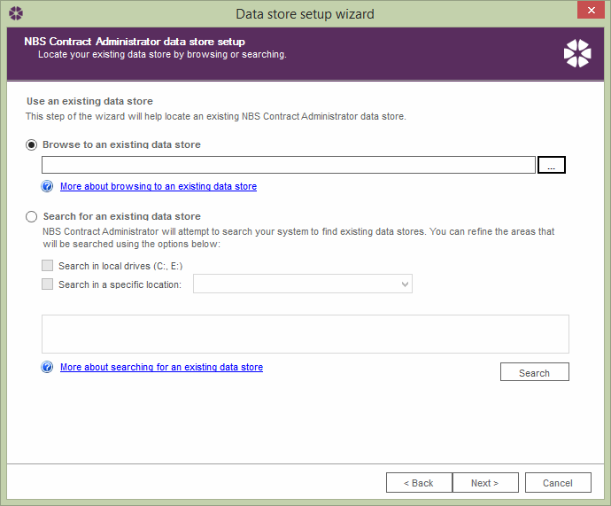
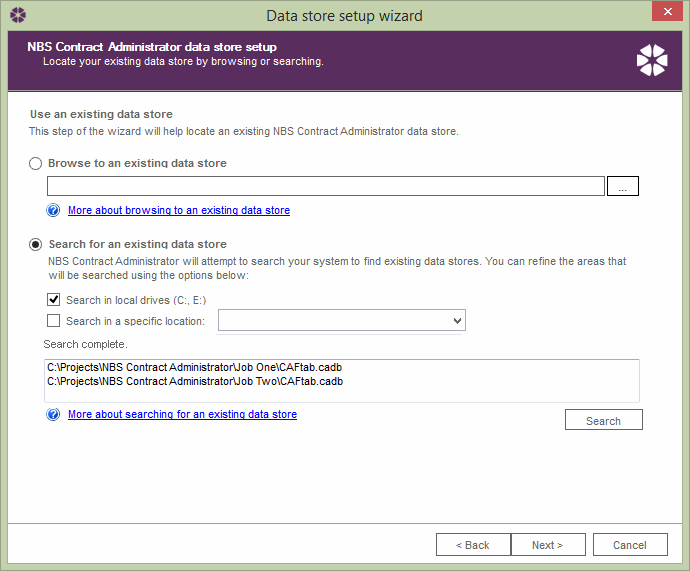

Finding an Existing Data Store |
Once NBS Contract Administrator is licensed and launched, if it is unable to automatically locate a datastore, it will prompt the user to either create a new datastore to locate an existing one. There are 2 ways to find an existing datastore:
Select the 'Browse to an existing data store' option using the radio button and click the browse button . Once the data store has been located, select the data store, click Open and then the Next > button on the data store wizard.

This will load the data store for use within NBS Contract Administrator.
Select the 'Search for an existing data store' option using the radio button . Tick the appropriate check boxes to select which area on the computer it should search for the datastore and then click the Search button - the software will then begin to search through the specified areas. Any datastores that are found will be listed in the area above the Search button.

Once the search has completed, select the appropriate data store from the list and click the Next > button.
This will load the data store for use within NBS Contract Administrator.
See also:
Data Store - Standalone or Network
Creating a Data Store
Change the Default Data Store